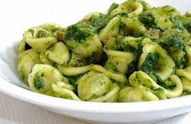

Orecchiette con le cime di rapa

Regione: Puglia
Le orecchiette con le cime di rapa, chiamate anche “recchitelle” o “strascinati”, sono uno dei piatti tipici più rappresentativi della Puglia, in special modo della provincia di Bari.
Ascolta la ricetta:
Ossibuchi alla milanese
Regione: Lombardia
“Questo è un piatto che bisogna lasciarlo fare ai Milanesi, essendo una specialità della cucina lombarda. Intendo quindi descriverlo senza pretensione alcuna, nel timore di essere canzonato”. Così Pellegrino Artusi introduce la ricetta degli ossibuchi alla milanese all’interno del primo ricettario della storia della cucina italiana.
Ascolta la ricetta: